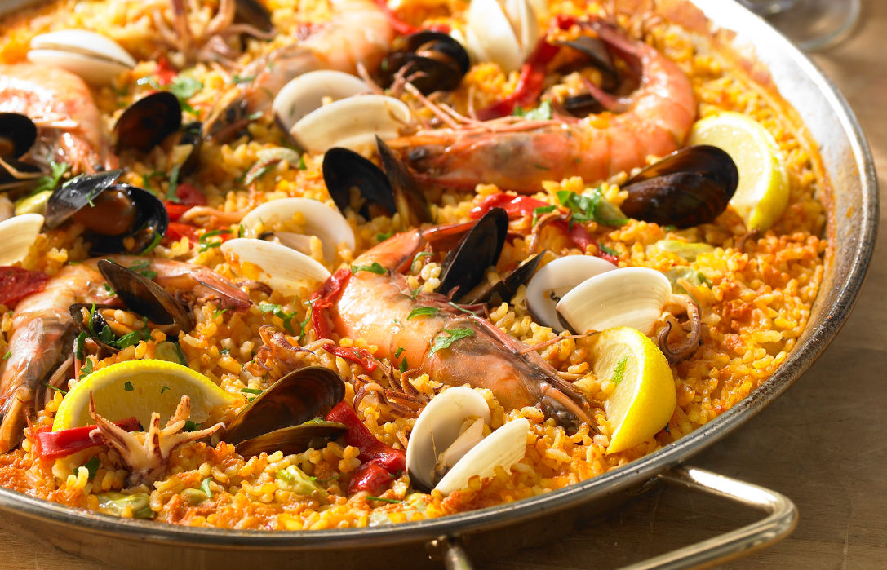
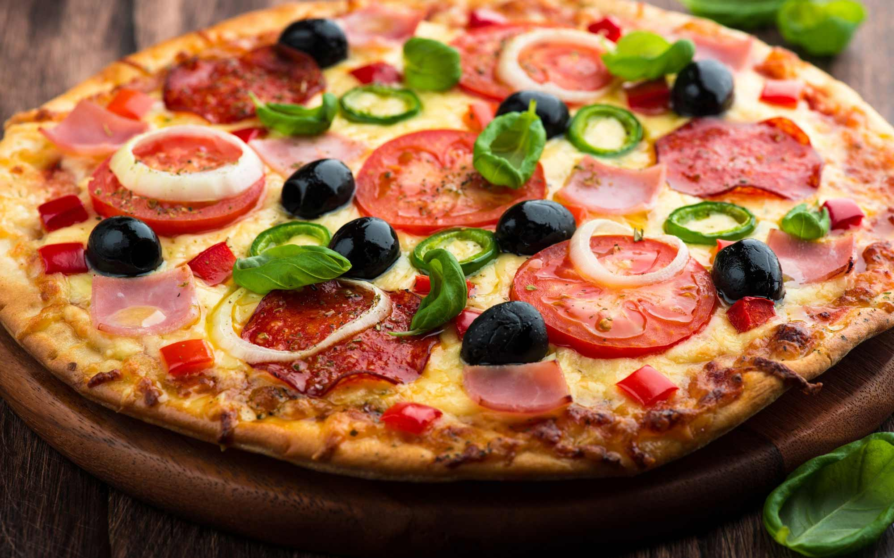

La paella
La paella es un plato típico de la cocina española que se elabora con arroz y una variedad de
ingredientes como pollo, conejo, mariscos y verduras. Se considera un plato muy versátil y fácil de
personalizar según los gustos de cada comensal.

Si deseas conocer su elaboración te damos todos los detalles a continuación.
Receta paella
La pizza
La pizza es un plato de origen italiano que se elabora con masa de pan, salsa de tomate, queso y
diversos ingredientes como pepperoni, champiñones, cebolla y aceitunas. Es un plato muy popular en todo
el mundo y se pueden encontrar numerosas variaciones y estilos de pizza en diferentes países.

Si deseas conocer su elaboración de una rica pizza te damos la información a continuación.
Receta pizza